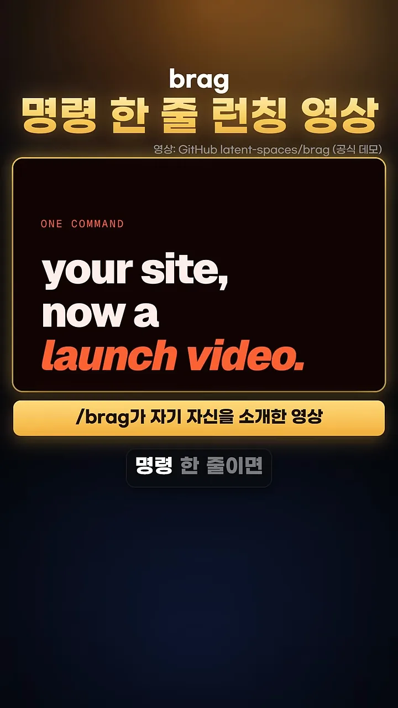
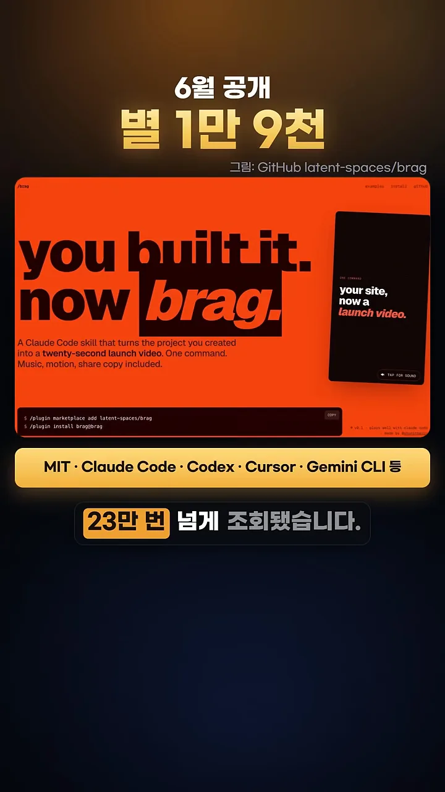
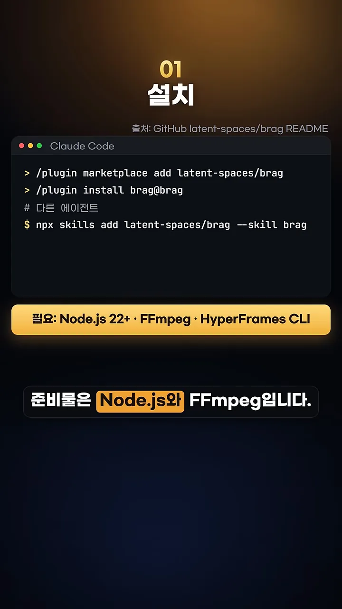
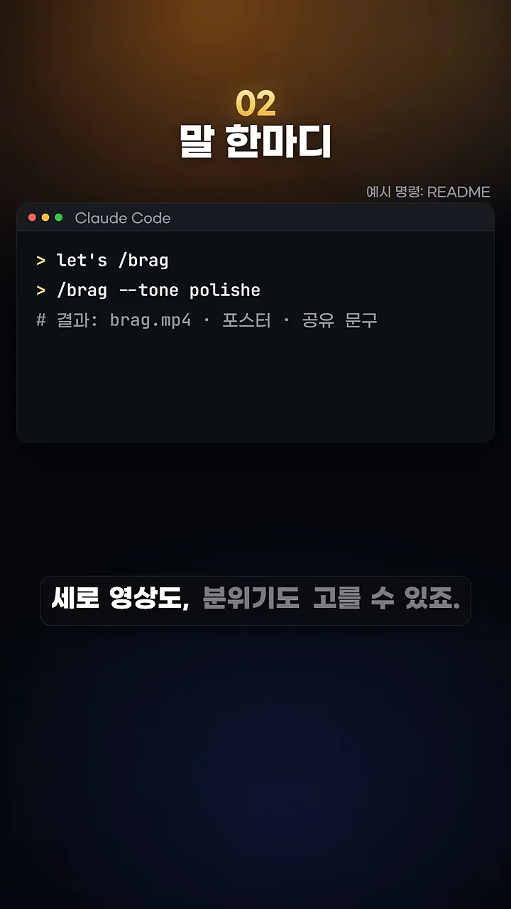
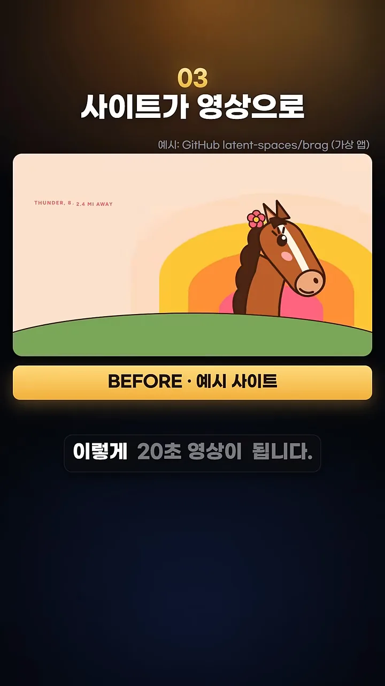
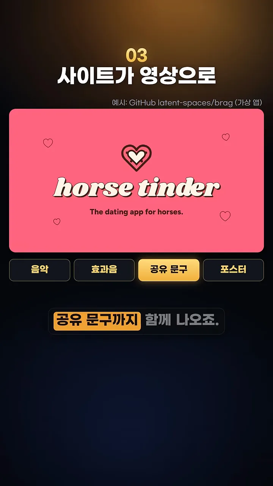
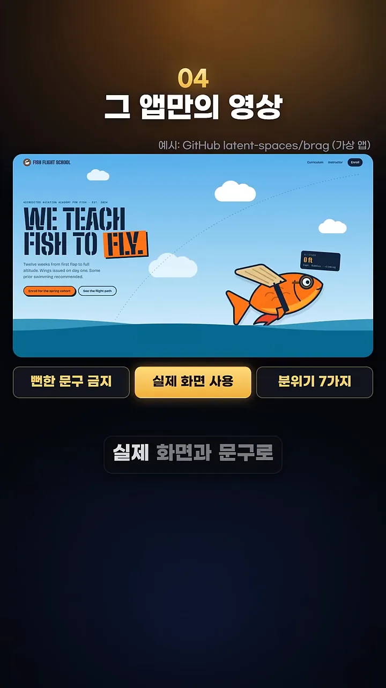
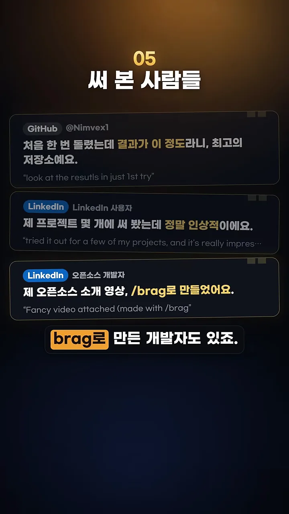
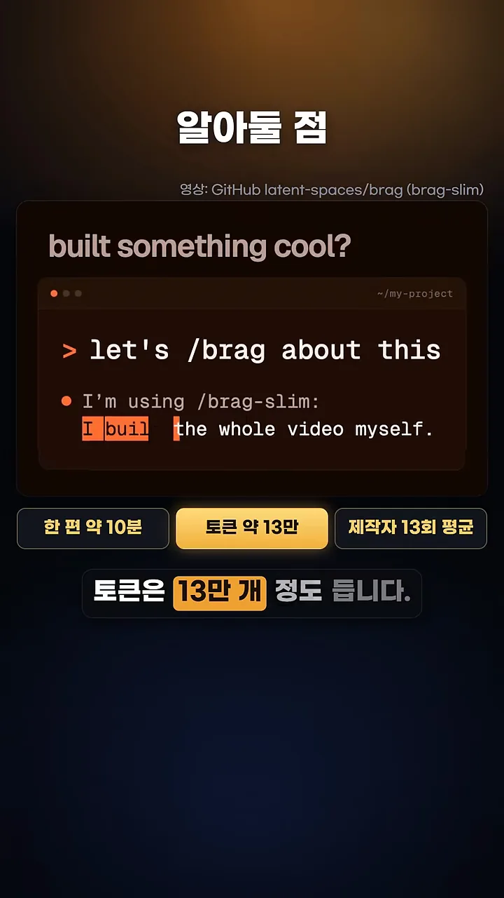

brag는 무엇이고 왜 나왔나요
앱은 다 만들었는데 홍보 영상은 누가 만들까요. 영상은 이 질문으로 시작해요. 스크린샷만 올리면 피드에서 금방 묻히고, 직접 편집하면 저녁 시간이 통째로 사라지죠. brag는 이 일을 명령 한 줄로 줄여 주는 에이전트 스킬이에요. 이름은 영어로 '자랑하다'라는 뜻이에요.
첫 장면부터 brag가 만든 결과물이에요. 화면 위 노란 띠에 '/brag가 자기 자신을 소개한 영상'이라고 적혀 있어요. 검은 카드에 'your site, now a launch video.'라는 문구가 큰 글씨로 떠 있죠.

다음 화면은 GitHub 저장소 latent-spaces/brag의 소개 페이지예요. 주황색 바탕에 'you built it. now brag.'라고 크게 적혀 있어요. 제목 위에는 '6월 공개, 별 1만 9천'이, 아래 노란 띠에는 'MIT · Claude Code · Codex · Cursor · Gemini CLI 등'이 붙어 있어요. 라이선스와 함께 쓸 수 있는 에이전트를 한 줄로 정리한 거예요. 영상은 소개 글 하나가 23만 번 넘게 조회됐다고도 말해요.

설치하고 한 마디로 실행하기
설치는 쓰는 에이전트에 따라 두 갈래예요. 화면의 터미널 창 위쪽 두 줄이 Claude Code용 플러그인 명령이고, '# 다른 에이전트' 아래 한 줄이 나머지 에이전트용이에요. 맨 아래 노란 띠에는 준비물이 적혀 있어요.

| 에이전트 | 설치 명령 |
|---|---|
| Claude Code | /plugin marketplace add latent-spaces/brag/plugin install brag@brag |
| 그 밖의 에이전트 | npx skills add latent-spaces/brag --skill brag |
Claude Code 쪽은 플러그인 마켓플레이스에 저장소를 먼저 등록하고, 그다음 플러그인을 깔아요. 다른 에이전트는 skills 도구로 한 번에 받아요.
let's /brag 한 마디면 끝까지 가요
설치 뒤에는 프로젝트 폴더에서 에이전트에게 let's /brag라고만 말하면 돼요. 화면 두 번째 줄의 /brag --tone polishe는 분위기를 정하는 옵션 예시예요. 끝이 잘려 보이지만 'polished(깔끔하게)' 분위기를 뜻해요. 마지막 주석 줄이 결과물이에요. brag.mp4 영상, 포스터, 공유 문구가 한꺼번에 나와요.

그 사이에 에이전트가 하는 일을 영상은 '코드를 읽고 기획부터 렌더까지 혼자 한다'고 한 줄로 설명해요. 그 흐름을 그림으로 옮기면 이래요.
flowchart LR A["let's /brag"] --> B["코드 읽기"] --> C["기획"] --> D["렌더"] --> E["brag.mp4 · 포스터 · 공유 문구"]
결과물, 후기, 비용
영상은 brag 저장소에 들어 있는 가상 앱 사이트로 결과를 보여 줘요. 첫 예시는 말을 위한 데이트 앱 'horse tinder'예요. 노란 띠의 'BEFORE · 예시 사이트'가 원래 웹사이트라는 표시예요. 분홍 바탕에 말 그림이 있는, 평범한 랜딩 페이지죠.

이 사이트가 20초 영상이 되면 진한 분홍 화면에 하트와 'horse tinder' 로고가 크게 떠요. 아래 칩 네 개가 함께 나오는 것들이에요. 음악, 효과음, 공유 문구, 포스터예요.

그 앱만의 영상을 만드는 규칙
두 번째 예시는 물고기에게 나는 법을 가르친다는 가상 사이트 'WE TEACH FISH TO FLY'예요. 아래 칩 세 개가 brag의 원칙이에요. 뻔한 홍보 문구는 금지 규칙으로 막고, 그 앱의 실제 화면과 문구를 쓰고, 분위기는 7가지 중에서 골라요.

써 본 사람들의 반응
후기는 세 개를 보여 줘요. 맨 위 GitHub 사용자는 첫 시도에 이런 결과라니 최고라고 했어요. 가운데 LinkedIn 사용자는 프로젝트 몇 개에 써 봤는데 정말 인상적이라고 했고요. 맨 아래는 자기 오픈소스 소개 영상을 brag로 만든 개발자예요.

한 편에 드는 시간과 토큰
마지막으로 비용이에요. 아래 칩에 '한 편 약 10분', '토큰 약 13만', '제작자 13회 평균'이 적혀 있어요. 만든 사람이 13번 돌려 본 평균으로 읽혀요. 위 화면은 let's /brag about this라고 입력해 brag-slim 버전이 영상을 만드는 장면이에요.

영상은 '만들었으면 자랑까지'라는 말로 마무리해요. 런칭 영상도 이제 명령 한 줄이면 된다는 거예요.